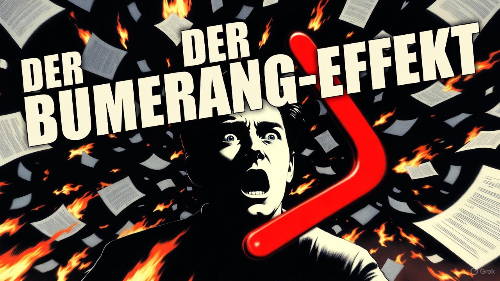
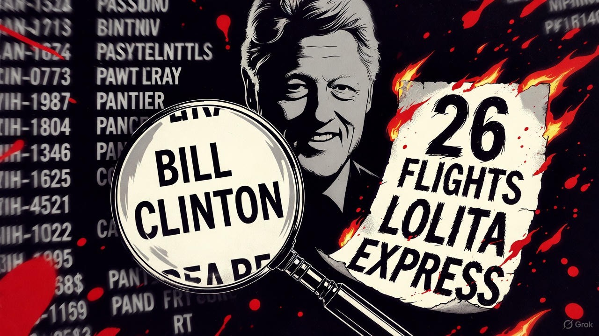
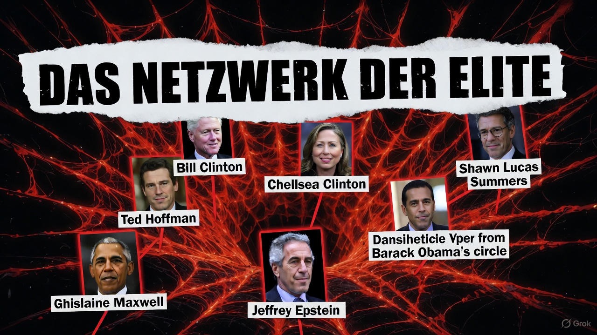
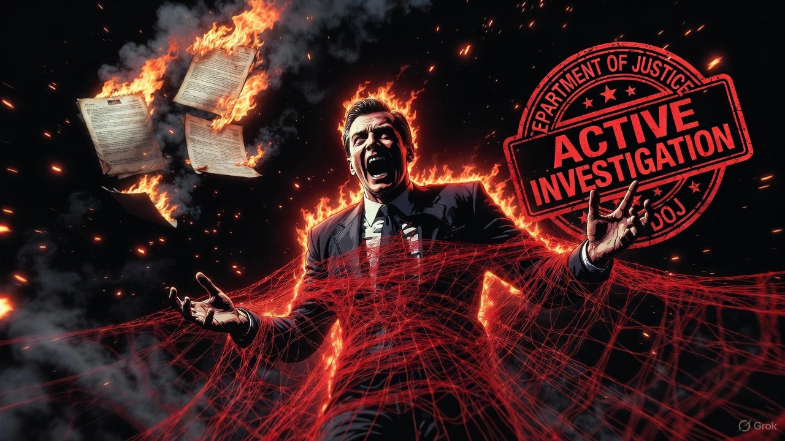
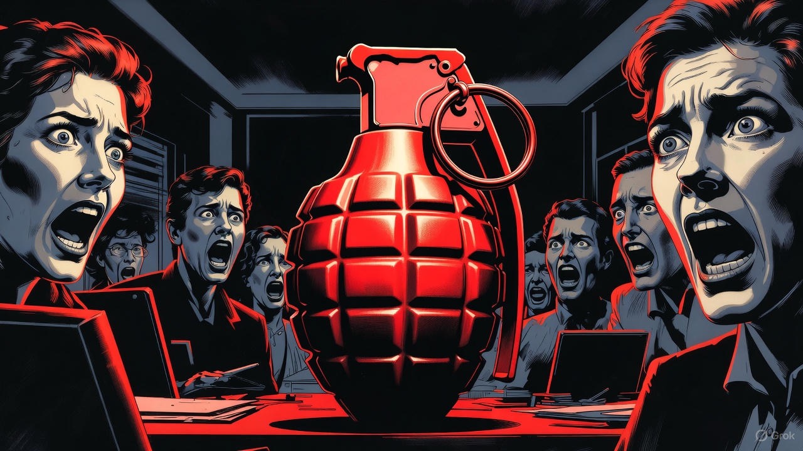

Der Epstein-Bumerang
- Panik bei den Demokraten: Sie zerstören sich selbst.
- Wie die Aktenveröffentlichung das Netzwerk enthüllte.
Die Eskalation & der Fehlschlag
- Opfer (Jess Michaels) & Abgeordnete (Angelita Gel) forderten Offenlegung.
- Demokraten veröffentlichten nur 3 selektive E-Mails, um Trump zu belasten.
- Ziel: Ablenkung von der Haushaltssperre (*shutdown*).
Der Bumerang-Effekt
- Trumps Gegenangriff: Forderung nach totaler Freigabe (20.000+ Seiten).
- Ergebnis: Hinweise gegen Trump verwässert (soziale Gerüchte).
- Wahrer Fund: "Tiefer gehende" Verbindungen zu Demokraten.

Entlarvte Absprache (Teil 1)
- Kathy Rumler (Ex-Obama-Beraterin) kommunizierte 2018-19 mit Epstein.
- Ziel: Pläne schmieden, um Trump anzuklagen (Amtsenthebung).
- Epstein: "Ich weiß, wie schmutzig Donald ist."
Entlarvte Absprache (Teil 2)
- Stacy Plaskett (Kongressabgeordnete) kommunizierte mit Epstein...
- ...während einer Kongressanhörung (2019).
- Epstein lieferte ihr buchstäblich Fragen & Gesprächspunkte per SMS.
Im Zentrum: Bill Clinton
- Verbindungen "tiefer und anhaltender" als die von Trump.
- 26 Flüge im "Lolita Express" (2002-2003) für humanitäre Reisen.
- (Anmerkung: Clinton flog nie zu Epsteins Insel).

Das Netzwerk der Elite
- E-Mails (2015): Epstein & Maxwell diskutierten, wie man "Bill schützen" könne.
- Larry Summers (Ex-Finanzminister): Scherzte 2017 mit Epstein über Trump.
- Reid Hoffman (LinkedIn-Gründer): Ebenfalls in den E-Mails enthüllt.
Trumps Gegenangriff
- 14. Nov.: Trump weist Justizministerium (DOJ) an:
- Formelle Untersuchung der Beziehungen von Epstein zu...
- ...Bill Clinton, Larry Summers, Reid Hoffman, JPMorgan Chase.

Die Konsequenz
- DOJ kündigt an, der Forderung nachzukommen.
- Trumps Schachzug blockiert vorübergehend weitere Freigaben.
- Begründung: Es laufen jetzt "aktive Ermittlungen" gegen Clinton & Co.

Fazit: Selbstzerstörung
- Der Versuch, eine politische Handgranate zu werfen, ist gescheitert.
- Die Waffe prallte ab und detonierte im eigenen Kommandoposten.
- Überlebende drängen weiter auf "vollständige Transparenz".

×